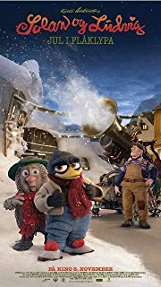

IMDB-Wertung: 6.8 / 10
IMDB-Wertung: 6.8 / 10  Metascore:
Metascore: 
The small town of Flåklypa is experiencing great lack of snow, which is why the inventor Reodor Felgen is asked to create a snow machine. However, things does not go as planned.
Alternativ: Solan og Ludvig - Jul i Flåklypa (Englischer Titel)
 IMDB-Wertung: 6.8 / 10 Metascore:
The small town of Flåklypa is experiencing great lack of snow, which is why the inventor Reodor Felgen is asked to create a snow machine. However, things does not go as planned.
Jahr: 2013
Dauer: 73 Minuten
FSK: 0
Land: Norwegen Studio: Universal PicturesTonspuren:
Untertitel:
Auflösung: SD (640x336) Größe: 700 MB
Genre: Animation/Trick, Familie
Regisseur: Rasmus A. Sivertsen
Drehbuch: Kjell Aukrust, Karsten Fullu, Harald Sommerin Simonnæs
Soundtrack: Knut Avenstroup Haugen
Darsteller:
 Kåre Conradi als Frimand Pløsen
Kåre Conradi als Frimand Pløsen Jakob Oftebro als Postmannen
Jakob Oftebro als PostmannenDatei: X:\Kinder Filme AVI\# A-M\Louis & Luca und die Schneemaschine (2013, FSK0, 640x336).avi seit 17.12.2018
Festplatte: Kinder-Filme+Trick
 Es gibt insgesamt 7 Filme in der Gruppe 'Kinder Filme AVI\# A-M'
Es gibt insgesamt 7 Filme in der Gruppe 'Kinder Filme AVI\# A-M'